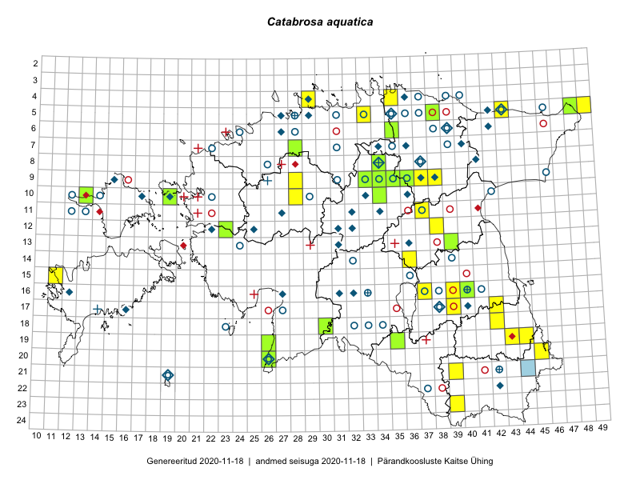

Catabrosa aquatica
Uuendatud: 2016-12-02
Kaardile koondatud taksonid: Catabrosa aquatica (L.) P.Beauv.

Kaart põhineb 29 kirjel, neist vaatlusi 24 ja eksemplare 5. Taksonit on leitud 22 ruudust.
Kuvatud viited 20 esimesele andmebaasikirjele, ülejäänud PlutoFis
- Thea Kull: 2015-08-03: 13-39: ala
- Meeli Mesipuu, Timo Luhamäe: 2015-07-23: 05-48: ala
- Kirsi Loide, Marje Loide: 2015-07-27: 17-42: ala
- Kirsi Loide, Marje Loide: 2015-07-28: 18-42: ala
- Thea Kull, Eerik Leibak: 2015-08-26: 12-23: ala
- Kersti Püssa, Rein Kalamees: 2015-07-16: 20-45: ala
- Jana-Maria Habicht, Ester Valdvee: 2015-08-15: 08-34: ala
- Jana-Maria Habicht, Ester Valdvee, Kirke Pilvik: 2015-07-25: 09-34: ala
- Jana-Maria Habicht, Ester Valdvee, Kirke Pilvik, Anu Nurk: 2015-07-30: 09-35: ala
- Vivika Väli, Ülo Väli: 2015-08-05: 19-43: ala
- Mari Metsoja, Eerik Leibak: 2016-07-21: 10-34: ala
- Ott Luuk, Eerik Leibak: 2016-08-08: 09-38: ala
- Erkki Otsman, Sergei Smirnov: 2016-06-15: 05-49: ala
- Sander Laherand, Tõnu Ploompuu, Nele Jõessar: 2016-07-25: 04-29: ala
- Sirje Azarov, Indrek Tammekänd: 2016-07-18: 20-26: ala
- Peedu Saar, Toomas Kukk: 2016-09-13: 05-43: ala
- Mari Reitalu, Triin Reitalu: 2016-07-11: 09-37: ala
- Peedu Saar, Toomas Kukk: 2016-09-13: 05-43: GPS punkt
- Tõnu Ploompuu: 2016-07-16: 04-35: ala
- Tõnu Ploompuu: 2016-07-16: 04-35: GPS punkt